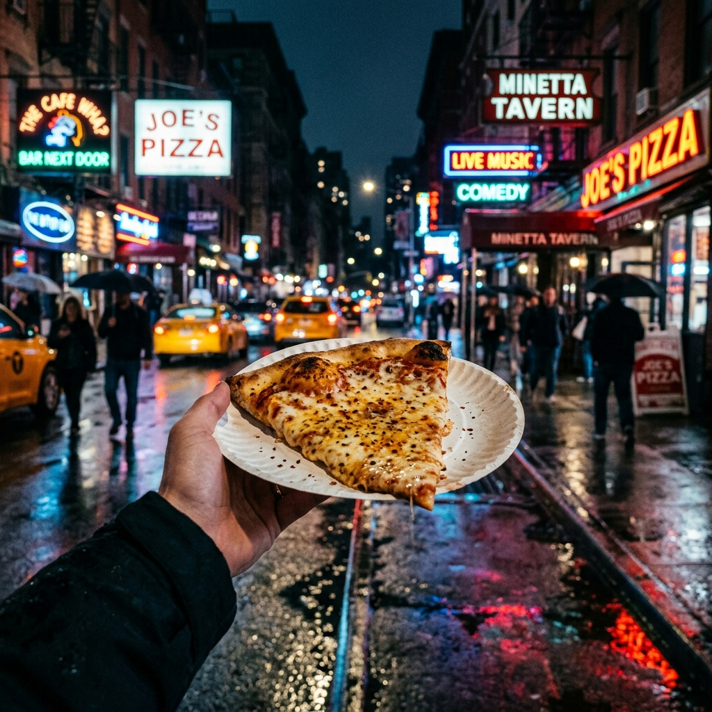

The Street Slice: Joe’s Pizza

There is a specific sound to a Joe's Pizza crust—a sharp, clean *crack* as you fold the slice in half. Standing at the counter, watching the flour fly in the back, you aren't just eating pizza; you're participating in a 40-year-old tradition.
📍 Teleport to 7 Carmine StThe Pastrami Portal: Katz’s Delicatessen
Entering Katz’s is like stepping into a time machine. The air is thick with the scent of brine and slow-cooked brisket. When that hand-sliced pastrami hits the rye, it’s a moment of pure, unadulterated NYC history.
📍 Teleport to 205 E Houston StThe High Tide: Le Bernardin
On the opposite end of the spectrum is the refined, hushed elegance of Le Bernardin. Eric Ripert’s seafood isn't just cooked; it's curated. This is the ultimate "Splurge" for the points enthusiast.
📍 Teleport to 155 W 51st StLegacy of the LES: Russ & Daughters
For over a century, Russ & Daughters has been the keeper of the city's smoked fish soul. Ordering a bagel with lox here is a lesson in patience and heritage.
📍 Teleport to 179 E Houston St